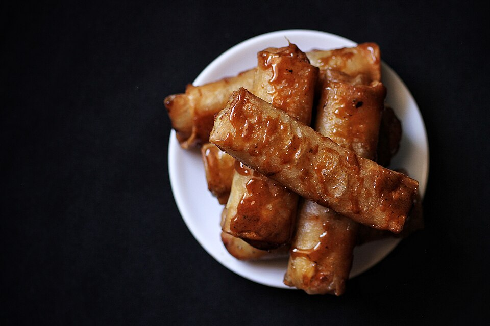

Home
Turon Recipe (Banana Lumpia with Caramel)

Description
Turon is a Filipino snack, also called banana lumpia due to its similarity
to the popular Filipino lumpia. This sweet snack can usually be seen on the streets
being peddled, and is easy to make with its ingredients being inexpensive.
Ingredients
- 6 pieces bananas
- 1 cup jackfruit
- 1 1/2 cup sugar
- 12 pieces lumpia wrapper
- 2 cups cooking oil
Steps
- Roll the banana on the sugar plate and ensure that the banana is coated with enough sugar.
- Place the banana with sugar coating on the lumpia wrapper. Add a slice of ripe jackfruit on top.
- Fold and lock the spring roll wrapper, use water to seal the edge.
- In a pan, heat the oil and put-in some sugar.Wait until the brown sugar floats.
- Put-in the wrapped banana and fry until the wrapper turns golden brown and the extra sugar sticks on wrapper.
- Serve hot as a dessert or snack. Share and Enjoy!